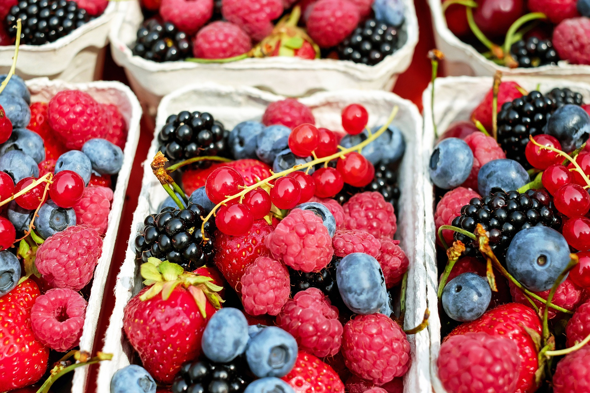

Veg
A vegetable is the edible portion of a plant. Vegetables are usually grouped according to the portion of the plant that is eaten such as leaves (lettuce), stem (celery), roots (carrot), tubers (potato), bulbs (onion) and flowers (broccoli).

fruits
A fruit is the part of a flowering plant that contains the seeds. The skin of a fruit may be thin, tough, or hard. Its insides are often sweet and juicy. But some fruits, including nuts, are dry. Fruits develop from a plant's flowers.

Non-Veg
Non-vegetarian food (in Indian English sometimes shortened to non-veg food) contains meat (red meat, poultry, seafood, or the flesh of any other animal), and sometimes, eggs. The term is common in India, but not usual elsewhere.